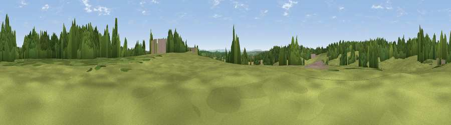

Oldberrow Hill
#35845 in England · top 72% of its area beats it · near UllenhallThe view, rendered

A 360° render of this exact spot computed from the terrain model, tree cover and land cover — summer colours, afternoon light, calibrated against photographs of famous viewpoints. Real trees, hedges and buildings will differ in detail.
The panorama
Grey silhouette: terrain skyline in each direction (720 bearings, Earth curvature and refraction included). Dashed green: skyline with trees (+15 m) and buildings (+8 m) as obstacles. Blue strip: how far the ground is visible on each bearing.
Where the view opens
Wedge length = distance to the farthest visible ground on that bearing (vegetation-aware). Rings at 10, 25 and 50 km.
What fills the view
54% grassland · 32% woodland · 11% cropland · 2% built-up
Angular shares of the visible panorama (visual magnitude), not map area. Landscape diversity 0.44 (0–1 Shannon).
Key numbers
More beautiful places nearby
The staircase of upgrades: each row has a higher view potential than everything closer. Driving times are estimates from straight-line distance, calibrated against real road routing — check an actual route before setting out.
| Place | Direction | Drive | Score |
|---|---|---|---|
| Viewpoint near Mappleborough Green | SW · 1 km | ~4 min | 57.0 |
| Round Hill | S · 6 km | ~13 min | 61.7 |
| Lodge Hill | S · 7 km | ~14 min | 64.0 |
| Viewpoint near Cofton Hackett | WNW · 12 km | ~23 min | 66.2 |
| Holywell Hill | NW · 15 km | ~27 min | 69.4 |
| Windmill Hill | NW · 16 km | ~29 min | 73.2 |
| Viewpoint near Clent | NW · 21 km | ~35 min | 73.8 |
| Viewpoint near Clent | NW · 21 km | ~35 min | 74.3 |
52.31246, -1.85018 · source: osm peak · position refined by local search. Computed location — check access rights before visiting.